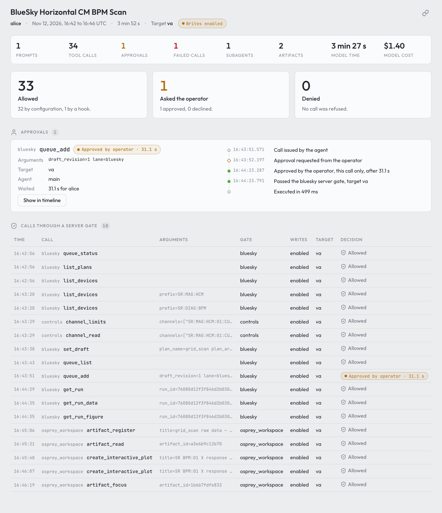
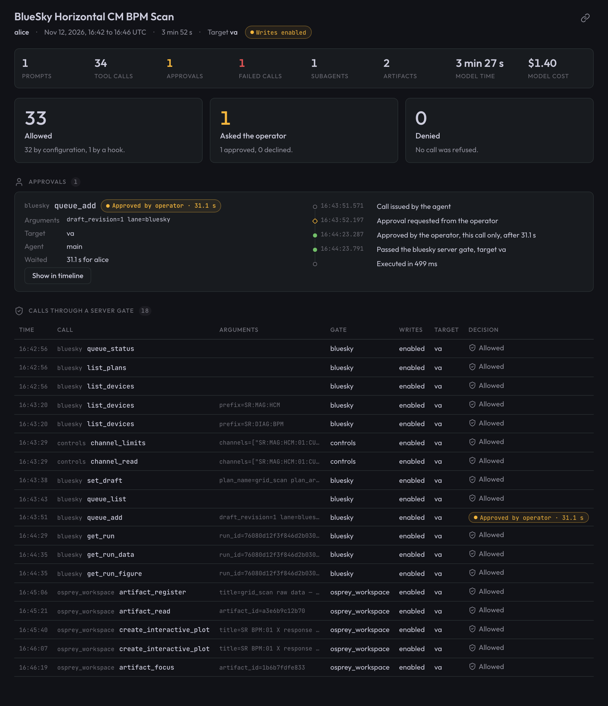

The Agent Record#
The agent record holds what the agent was asked, what it answered and what
it did, and what was decided about each call. The agent-record service
keeps every entry for agent_record.retention_days. Each closed day also goes
into an append-only archive on the deployment host, which keeps it for
good.
What You’ll Learn
How to read a session on the Activity page
How to let another person read the record
How long the record keeps an entry, and how to check that it is healthy
What the archive holds, and what the record can vouch for
Read a session#
The Activity page shows what the agent did in one session and what was decided about each call. It reads the record, so a past session reads the same as the live one. In the web terminal, ☰ More › Activity log opens it on the session in the terminal; its sidebar lists your sessions. It has four views:
Timeline — prompts, answers and tool calls in order, a subagent’s calls under the call that started it. Open a call for its arguments, its result and the safety decisions on it.
Tool calls — every call as a table, built-in tools included. Sort it, or narrow it to Control system and services or to Built in.
Safety — how many calls were allowed without asking and by what, how many asked the operator, and how many were refused without asking; each approval with what was asked and how long the answer took; and the calls a server gate filed an entry for.
Artifacts — what the session saved, each with the call that saved it.


The Safety view of a Bluesky grid scan on the virtual accelerator. Of 34 calls, one asked the operator. Captured with OSPREY v2026.9.0b3.post7201+geca9892f3.d20261113.#


The Safety view of a Bluesky grid scan on the virtual accelerator. Of 34 calls, one asked the operator. Captured with OSPREY v2026.9.0b3.post7201+geca9892f3.d20261113.#
The chip in the toolbar says how much of this the record vouches for. Click it for the reason:
Record complete — the record returned the whole session.
Record incomplete — the read did not return the whole session. What is shown is correct, but entries may be missing.
Record unavailable — the session could not be read. The page keeps the last reading it has of that session and says so, offers Try again, and tries again by itself every 10 seconds.
The session in the terminal is read again every 10 seconds. A session picked from the sidebar is read again only while it is live.
Let others read it#
Each person reads their own sessions. To let someone read beyond them, for
example a shift lead or an auditor, name them as a reader in the profile’s
top-level agent_record: block:
agent_record:
readers:
- name: carol # a roster user: same name, same person
- name: dana
oidc_subject: 7f3c9e1a-... # recognised by sign-on in the browser
kinds: [audit, run] # default: every kind
days_back: 3 # default: retention_days
name— lowercase letters, digits,_and-, starting with a letter or digit; each reader is named once.oidc_subject— the sign-on subject that is this reader in a browser, when the web terminals sign people on withoidc. A reader with the same name as a roster user is that user already, and may not carry a subject.kinds— the kinds of entry the reader may read (prompt,answer,tool_call,audit,runand the rest).days_back— how far back the reader sees, at mostagent_record.retention_days.
The demo preset declares one reader, the deployment’s admin roster user
(carol).
Run osprey up. It mints each new reader’s key into
.env.agent-record.reader.<name> at the repo root, mode 0600, and prints the
file’s path, never the key. The file holds one line,
OSPREY_AGENT_RECORD_LOGIN=reader.<name>:<key>; give the key to the person
out of band.
Rotate, withdraw or narrow a reader
Rotate a key: delete the file and run
osprey up. The old key stops working andosprey upwrites a new file.Withdraw a reader: delete the entry and run
osprey up. The key stops working. The key file is set aside as.env.agent-record.reader.<name>.withdrawn-<date>, so re-adding the name later mints a fresh key.Narrow a reader: change
kindsordays_backand runosprey up.
Within its kinds and days_back, a reader sees every identity’s
sessions, with its key and in a browser alike. It writes nothing. In a browser
it reads on the history page, /history/ on the web tier’s second server
(modules.web_terminals.history_port, or history_origin behind a load
balancer). Pages on the terminals’ origin, where agent-written HTML runs,
cannot read from it. A roster user named as a reader signs in as themselves;
one off the roster is recognised by its oidc_subject. See
The history page.
How long the record keeps an entry#
Set agent_record.retention_days (default 14, at least 1). Days count by
arrival day: the UTC day an entry reached the record.
Once a day, right after the export, the record removes the days past retention, oldest first. It removes only the days the archive holds, so an export that is down for longer than the window removes nothing, and the record grows until the export catches up.
Removed days, and changing the window
The record removes whole days, never single entries. A removed day stays out: a transcript that Claude Code rewrites still carries the lines of removed days, and the record skips every line older than its oldest remaining day. The export never goes back to a day before the record’s oldest day either.
A lower agent_record.retention_days takes effect at the next daily run.
A higher value keeps the days the record still holds, not the ones it
already removed. Those are in the archive.
Check it#
Run osprey health. Its agent_record rows are the record’s own account
of itself. Every problem is a warning, because the record keeps working in
part; the row says where.
What each row says
agent_record_backend— the store the record writes. A warning names why it is not ok, or that it refused a spool pass.agent_record_spool— only when the spool set aside paths it would not read.agent_record_source.<identity>— one per writer identity. It reads receiving while entries arrive and idle when the source has no live session and nothing waiting; both are fine. It warns when the source is stopped (a live session or lines waiting, and nothing reached the record for 5 minutes), when its backlog is older than 2 minutes, when the record refused its lines in the last 24 hours, or when its writers logged errors.agent_record_transcripts.<identity>— one per transcript folder, the same way.agent_record_export— how far the export to the archive is behind. It warns at more than one closed day, when the last export failed, or when the archive cannot be read.
On the host, two commands ask the record directly; when no record is running, they start a host-local one for the call:
osprey agent-record healthprints every source, transcript folder, the backend and the export lag, and names each problem.osprey agent-record exportruns the catch-up export now and prints the days it wrote.
The archive#
The record exports each closed UTC day into var/archive/<YYYY-MM-DD>/. The
archive service copies the agent’s artifacts and the plan-queue history
into the same day directories. The demo preset deploys it; in another profile,
add it under services: and run osprey build and osprey up:
services:
archive:
template: osprey.archive
Without the service, the record still exports its own days; only the artifact
and plan-queue copies stop. services.archive.interval_seconds sets the time
between passes (default 86400); osprey health warns when the last pass
is older than twice that.
Where everything lives, and what deletes it
Entries (prompts, answers, tool calls, transcripts, safety decisions, dispatch runs and bridge turns):
var/agent_record/(backend: embedded) or theagent_record_clickhouse_datavolume (backend: clickhouse). Deleted by retention, only for days the archive holds, and byosprey reset --purge-audit. Archived as one Parquet file per day.Spool:
var/spool/<identity>/, where every writer appends before the record ingests it. Deleted once ingested, and byosprey reset --purge-audit. Not archived; what it carried is in the record.Transcripts: each web terminal user’s
<user>-claude-configvolume and the dispatch worker’sclaude-config/, underprojects/; for host sessions (osprey chat,osprey web), your own~/.claude/projects/. Claude Code deletes them after the larger ofagent_record.retention_daysand 30 days (host sessions: its own setting). Not archived; the record ingests them as they are written.Artifacts:
artifacts/on each user’s<user>-agent-datavolume and on the dispatch worker’s. Deleted in the gallery, with the user’s volumes, and for dispatch afterRETENTION_DAYS. Archived, files and index.Plan-queue history: each lane’s Redis volume. Archived as Redis persistence files.
The archive: nothing deletes it but
osprey reset --purge-audit, which removes the record’s exports only.
The 30-day floor also sets how long Claude Code keeps its file history, shell snapshots, plan files and debug logs on these volumes. Host settings are never written.
What a day directory holds
the files copied that day, under
<kind>/<name>/<path>;the record’s export of that day, under
agent_record/entries.parquet;one
MANIFEST.jsonl, appended to and never rewritten: afileline per copied or exported file (source,path,size,sha256);agent_record_daywhen the day’s export is whole (a day without it is exported again);agent_record_purgedwhen it was purged; and apassline closing every archive-service pass.
The archive service copies a file again only when its content changed. A
second copy on the same day gets the pass time before its suffix, for
example artifacts.T142233Z.json. To restore a lane’s plan-queue history,
point redis-server --appendonly yes at a copied appendonlydir;
redis-check-aof --fix repairs a copy taken mid-write.
Permissions
var/archive/ has mode 2770, set by every osprey build, and the
group of var/agent_record/. Its two writers, agent-record and the
archive service, each run in their own container under their own user;
what they create takes the root’s mode. Only those two mount the directory,
and the agent’s own code may not touch it. You own it and belong to its
group, so osprey health, an export and osprey reset --purge-audit
on the host can read and delete what either wrote. Under rootful docker the
archive service hands every path it creates to the owner and group of
var/archive/.
Not archived, older audit files, and removing a user
Not archived: a plan lane’s Tiled catalog (beamline data, with its own retention); an artifact deleted between two passes; anything a user’s volumes held when purged while the archive service was not running.
Audit files from before the record stay in
var/audit/as they were: the record does not read them, they are not archived, and the agent’s own code may not write them.osprey resetkeeps them; onlyosprey reset --purge-auditdeletes them. Read them withgreporjq.Removing a user:
osprey users removeandosprey users prunewith--archiveor--purgerun a last archive pass first, then remove the archive container before the volumes.osprey buildandosprey uprecreate it.
What the record can vouch for#
The record is only as trustworthy as the processes that write to it:
Containers are the boundary. Each sender’s container holds the login of the one identity it records as. On a deployment whose agent runs on the host, the agent runs as the operator’s own user, and the credential files are within its reach.
Within one container, any process can write that user’s record.
Prompts and events are reported by the sender. The record files an entry under the identity it arrived from, never under a name the sender wrote; what the entry says happened is the sender’s account.
Agent-authored session plans run inside the queueserver container. On a person’s own history page, a preflight entry appears only when it matches their own queue-submit call within 60 seconds.
Each fact is stored once. A restart, a resumed session or a rewritten transcript adds no second copy. While the store is unreachable the senders keep their spools, and
osprey healthshows each backlog.